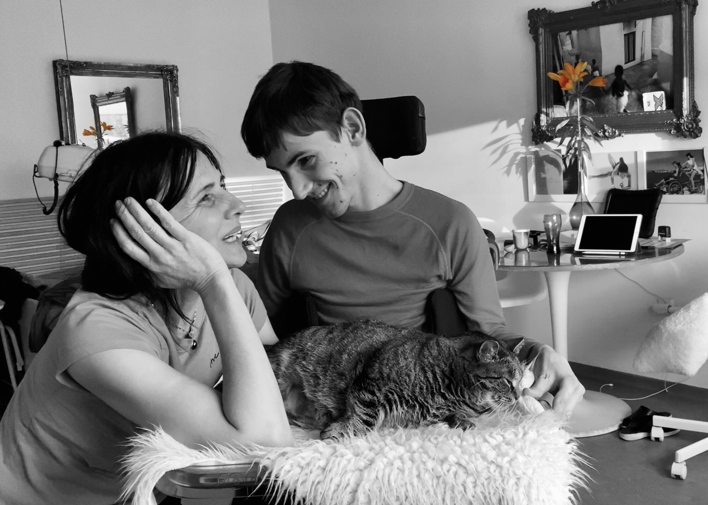

Emma Robinson a Kuba z Duba
Neuvěřitelná dobrodružství od plotny
Vzkazy v láhvi
Rozhovor pro Můj rozhlas
Poslechněte si nejnovější rozhovor s Emmou – maminkou, pečovatelkou a lektorkou jógy –
pro Můj rozhlas.
Tipy na výlety
Hvar voní
Rozmarýnem, levandulí, piniemi, šalvějí a divokým horským tymiánem.
Ano, zvlášť dobře si to uvědomíte v horách….
na skútříku, po cestě z hlavního města, zadem, po staré
Tipy na výlety
Bezbariérovým karavanem k moři
Charlie Tramp je miláček.
Dva roky nové, pořádně veliké fáro, připomínající spíše skříňovou
Avii než kompaktní dodávku. Ovšem s kompletně bezbariérovou úpravou
i pro člověka
Tipy na výlety
Jak se Kubimu líbilo v Českém Krumlově
Moc. A pro nás byla jeho radost obrovskou satisfakcí.
Český Krumlov je prostě nádherný.
Obzvláště, není-li v něm příliš turistů. A to teď shodou okolností...
Vzkazy v láhvi
Člověče, já se nemůžu pohnout …
Moc. A pro nás byla jeho radost obrovskou satisfakcí.
Český Krumlov je prostě nádherný.
Obzvláště, není-li v něm příliš turistů. A to teď shodou okolností...
Vzkazy v láhvi
A co teď ?
Vždycky se ocitneš tam, kam si došel. K jaké činnosti ses dostal, takovou vykonáváš.
Ať si myslíš cokoli, myslíš si právě to, co si myslíš.
Jinými slovy: A co teď ?
Tipy na výlety
Rač
Pořádný výhled to je něco, co se vozíčkáři
nedostává tak často už proto,
že výhled rovná se kopec a kopec rovná se
velké úsilí ho zdolat.
Vzkazy v láhvi
Babi
A teď tu sedím a na sobě mám babičky krimplenový béžový šaty s bledě
modrýma růžema a jsou mi skoro přesně. Ale ty je nebudeš nosit
Tipy na výlety
Termální lázně Štúrovo
Je po létě.Před týdnem jsme se vrátili z termálních lázní Vadaš – Štúrovo.
A to je opravdu horký tip,
jak pro spastika jako je Jakub,
Vzkazy v láhvi
Víte, že jste hrdinka?
Zeptal se mě dneska pán ve výtahu na Floře . Zvedám zrak od
joystiku električáku Jakuba a dělám překvapenou.
To mě nenapadlo, odpovídám ne příliš